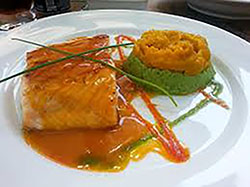
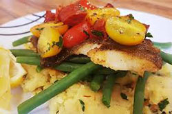

Maanantai
Tiistai
Keskiviikko
Torstai
Perjantai
Tiedot
Varaus
Yhteys
Ravintola Oulan lounaslista
Lounaat
Maanantai
Juusto-vihanneskeittoa ja kokin sämpylä Paistettua lohta, sinappikastiketta, tilliperunoita ja kasviksia Marjakiisseliä ja hunajakermavaahtoa

Tiistai
Kana-fetajustosalaattia ja kokin sämpylä Paistettua punakampelaa, pinaattikastiketta ja perunamuusia Pannukakkua, mansikkahilloa ja kermavaahtoa

Keskiviikko
Tomaatti-yrttikeittoa ja kokin sämpylä Kalkkunaleikettä, BBQ-kastiketta, riisiä ja kasviksia Omenapiirakkaa ja vaniljakastiketta
Torstai
Rapukeittoa ja kokin sämpylä Poronkäristystä, perunamuusia, puolukkahilloa ja suolakurkkuja Hedelmäsalaattia ja kinuskikastiketta
Perjantai
Savulohisalaatti ja kokin sämpylä Naudan paahtopaistia, punaviinikastiketta, kermaperunat ja kasviksia Suklaamousse
Hinta
Lounaan hinta on 11 euroa, sisältää ruokajuoman - vesi, kotikalja, maito
Aukioloajat
ma-pe
la
10:30-15:00
11:00-15:00
Varaa pöytä
nimimerkki
Sähköposti
Päiväys
pöytä
Yhteystiedot
Ravintola Oula Hallituskatu 12 96200 ROVANIEMI
Puh. (016) 555 4755
Fax (016) 555 4756
E-Mail: ravintola.oula@oulanet.fi